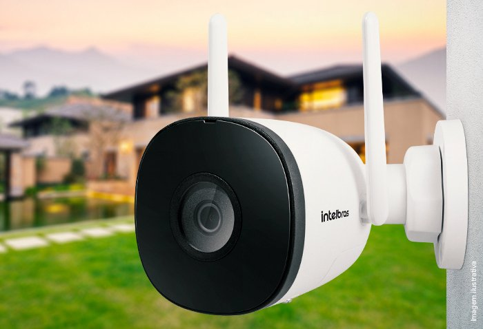
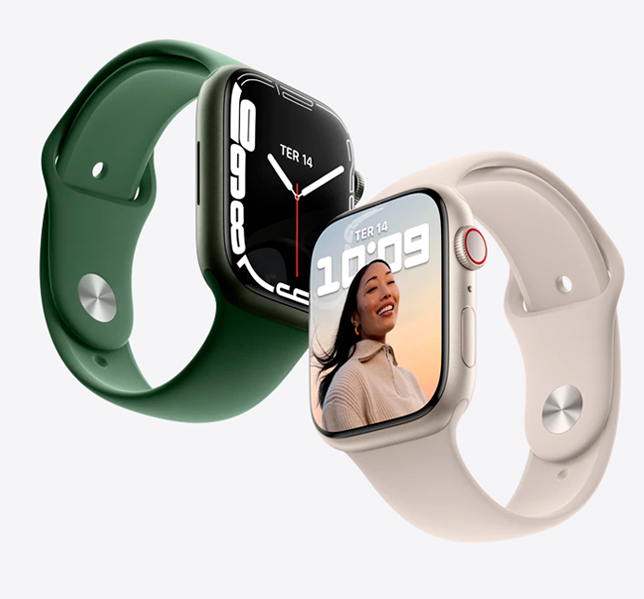

Melhores eletrônicos e hardwares
postado em 20 maio 2023Echo Dot
A Echo Dot é a versão "mini" da Amazon Echo, assistente virtual da fabricante.
O gadget funciona com a assistente de voz Alexa, respondendo a comandos, reproduzindo músicas e interagindo com o usuário. Por meio do dispositivo, é possível pedir um Uber, uma pizza, controlar aparelhos conectados, entre outras funções. (TechTudo, 2023)
Optoma Projetor
Desfrute de imagens nítidas e alto contraste dinâmico em seu home theater com o projetor DLP a laser Full HD Optoma HZ39HDR de 4000 lúmens.
Sua resolução nativa Full HD 1920 x 1080 exibe imagens claramente na maioria das distâncias de visualização, enquanto sua taxa de contraste dinâmico de 300.000: 1 ajuda a aprimorar os detalhes em imagens escuras. Sua taxa de projeção de 1,21 a 1,59: 1 permite colocar o projetor apenas a distâncias moderadas da tela para imagens grandes em salas de tamanho médio.
Monitor LG 34WP550
Com 34 polegadas, ele tem resolução Full HD e HDR10, trazendo cores mais vivas e também mais brilho quando comparadas com os monitores convencionais.
O painel IPS tem sRGB, reproduzindo as cores com 95% de fidelidade, deixando-as mais reais e sendo um aliado de quem trabalha com edições.
E sua tela grande torna possível utilizar ele como multitarefas, então você pode abrir diferentes janelas em uma única tela na ordem que você preferir. (Guia dos Melhores, 2023)
Macbook Air M2
Recentemente a Apple lançou o novo modelo de processador da marca, o processador M2, uma evolução do anterior M1.
Então essa nova versão vem com ainda mais performance para a maioria das atividades que você pode executar nele.
Benchmarks que encontramos na web sugerem cerca de 40% a mais performance no Macbook Air M2 em comparação ao Macbook Air M1. (Guia dos Melhores, 2023)
Epson EcoTank L3250
Ela é versátil, econômica e durável além de custar um preço justo considerando todas as suas qualidades.
O modelo é uma atualização da L3150, uma das impressoras mais vendidas do Brasil nos últimos anos.
É multifuncional, ou seja, imprime, escaneia e copia. É possível pedir até 20 cópias de uma só vez, mas é difícil de visualizar já que ela não conta com visor digital. (Guia dos Melhores, 2023)
Intelbras iM5 SC

Aspectos como seu campo de visão, qualidade de imagem Full HD, resistência foram decisivos na nossa seleção.
O modelo apresenta proteção IP67, o que significa grande resistência à chuva e poeira, fazendo dele uma ótima opção para ambientes externos.
Isso é ainda melhor quando vista sua qualidade de visão noturna, que alcança até 30 metros e interage bem mesmo nos ambientes mais escuros. (Guia dos Melhores, 2023)
Apple Watch Series 7

Seguindo o padrão de design convencional de boa parte dos smartwatch, ele pode ser adquirido nas versões 41mm, 45mm, com GPS ou GPS + Celular. Com a qualidade já conhecida pela marca, ele apresenta diversas funcionalidades e possibilidades.
Algumas delas são, medição do nível de oxigênio no sangue, ECG e monitoramento do sono. Além, é claro, da conexão Bluetooth com o seu smartphone Apple. (Guia dos Melhores, 2023)
Sony 1000XM2
Começando pelo fato de ser sem fio, a transmissão é feita de forma rápida e você não sente quase nenhuma diferença comparando com os modelos que possuem fio. Mas ele também oferece a possibilidade de ligar o cabo caso você queira um áudio perfeito.
Você pode personalizar os modos de cancelamento de ruído do Sony 1000XM2. Se você quer ouvir música sem se isolar completamente do som ambiente, se você quer ouvir anúncios importante como chamadas em aeroportos ou se você quer ouvir apenas sua música como em viagens, tudo é possível com esse fone. (Guia dos Melhores, 2023)
Site referência
Top 5 buscas populares
1. Fones de ouvido
2. Monitores
3. Notebooks
4. Caixas de som bluetooth
5. Projetores
Redes sociais